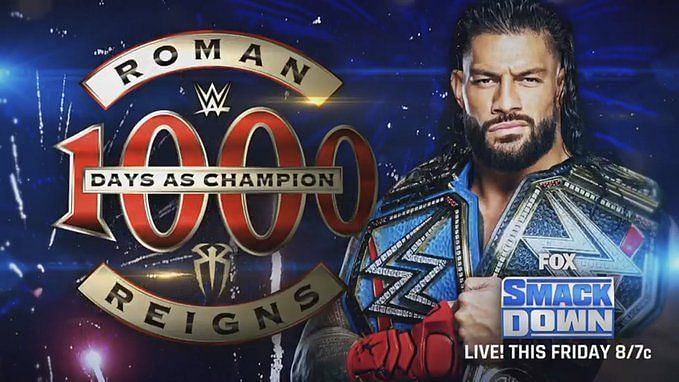

<!DOCTYPE html>
<html lang="en">
<head>
    <meta charset="UTF-8">
    <meta http-equiv="X-UA-Compatible" content="IE=edge">
    <meta name="viewport" content="width=device-width, initial-scale=1.0">
    <link rel="stylesheet" href="estilos2.css">
    <title>1000 dias</title>
</head>
<body>
    
    <style>

        body{
            background-image: url("back/ro.jpg");
        }

    </style>


</body>
</html>


<body>
    
    <h1 class="titulo">1000 DIAS</h1>
    <p class="hola">RECONOCE LOS 1000 DIAS CAMPEON DEL JEFE TRIBAL</p>

    <section>
        <h2 class="des"> Roman Reigns logró coronarse con el Campeonato Universal de la WWE en Payback 2020, específicamente, el 30 de agosto del año más largo gracias a la pandemia por covid-19.

            "El Jefe Tribal" se coronó luego de vencer Bray Wyatt, quien apenas se había coronado siete días antes en Summerslam donde venció a Brawn Straumann, aquí fue donde comenzó el reinado de Reigns.
        </h2>
        <a href="index.html">  </a>
    </section>

</body>